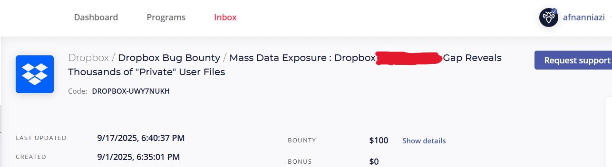

leveraging Generative & Agentic AI
Validated security researcher credited by Zoho, Dropbox, and Atlassian for critical Access Control disclosures.
Generative and Agentic AI specialist infusing intelligent workflows into Cloud DevSecOps to orchestrate highly secure cloud ecosystems.
EduQual Scotland, UK BSc Level 6 Presentation & Professional Verification Evaluation
Afnan Khan's Interview
Deep-dive production logs mapping architectural metrics, structural obstacles, and operational outcomes

Designed and built a zero-trust production mesh infrastructure engineered for high-compliance healthcare software systems. Focused on cryptographic workload identities and isolated data perimeter constraints across distinct multi-cloud configurations managed via programmatic orchestration templates.
Managed running clusters evenly across Azure (AKS) and Google Cloud (GKE) topologies. Enforced dynamic mutual TLS (mTLS) parameters across the runtime using Istio coupled with SPIRE/SPIFFE for short-lived token authentications. Used HashiCorp Vault engines to inject application runtime secrets securely dynamically at boot time, avoiding configuration drift or tracking exposure risk.
Enforced mandatory automated runtime constraints via Open Policy Agent (OPA) to reject misconfigured deployments. Constructed HIPAA monitoring rules using distributed Prometheus log scrappers tracking runtime behaviors on live custom Grafana analytic panels.

Constructed an automated cloud orchestration pipeline implementing strict GitOps synchronization logic. Eradicated manual target interaction mechanisms entirely, ensuring that every infrastructure shift remains explicitly tracked inside version control histories.
Active code updates trigger automated multi-stage Jenkins workflows that construct immutable container snapshots, shifting them directly to secure private Amazon ECR registries. Inside the production network, ArgoCD instances constantly match active infrastructure definitions against current live states inside Amazon EKS clusters, applying delta patches smoothly without generating environment downtime.
Ingress traffic management components safely isolate processing corridors from internal database storage volumes mapped using scalable Amazon EFS file sharing networks. Access tokens and structural deployment certificates are recycled regularly to completely mitigate attack lateralization risks.

Designed a highly reliable multi-tier operational microservices app using an automated Infrastructure as Code architecture model. Engineered specialized cloud isolated perimeters ensuring secure public-facing portal connectivity with decoupled backend engines.
Provisioned structural cloud boundaries programmatically using complex, parameterized Terraform configuration files. Code iterations are routed directly to safe private Azure Container Registries (ACR) before cluster pull executions trigger on scaled Azure Kubernetes Service (AKS) system instances. Persistent storage elements utilize highly responsive Azure Cosmos DB engines.
Embedded automated SonarQube quality gate verification rules directly inside self-hosted runner infrastructure blocks. Code variations failing predefined structural security scans, formatting rules, or code smell metrics are blocked automatically prior to registry image compilation steps.
Beyond my core flagship platforms, my active development history features over 50 specific automation blueprints documented in my project logs and LinkedIn history, categorized below:
Defensive verification proofs and verified elite platform acknowledgments
As an active security hunter, I test real-world application boundaries. My structural focus centers on uncovering critical **Broken Access Control (BAC)** parameters and configuration bypass flaws, resulting in formal security validation listings from global organizations:

Verified listing inclusion following secure bug reporting validation.

Structural access flaws analyzed across target application logic.

Vulnerability submission validated and closed under disclosure rules.

Financial validation reward transactions showing closed security classifications.
Automated hybrid cloud pipelines via AWS CodePipeline, GitHub Actions, and GitLab structures. Coded modular multi-tier environments using Infrastructure as Code tools and applied structural validation components directly to cluster runtimes.
Identified severe access control flaws during infrastructure security assessments, successfully mitigating high-consequence risks of permanent account destruction and mass profile modification.
Lead Security Architect spearheading R&D, strategic planning, and team organization to deliver enterprise-grade web application security testing for corporate clients.
Completed an intensive AIOps program mastering the integration of AI intelligence across Cloud architecture, DevOps pipelines, and infrastructure security.
Available for advanced consulting, remote DevOps engineering roles, and system security reviews